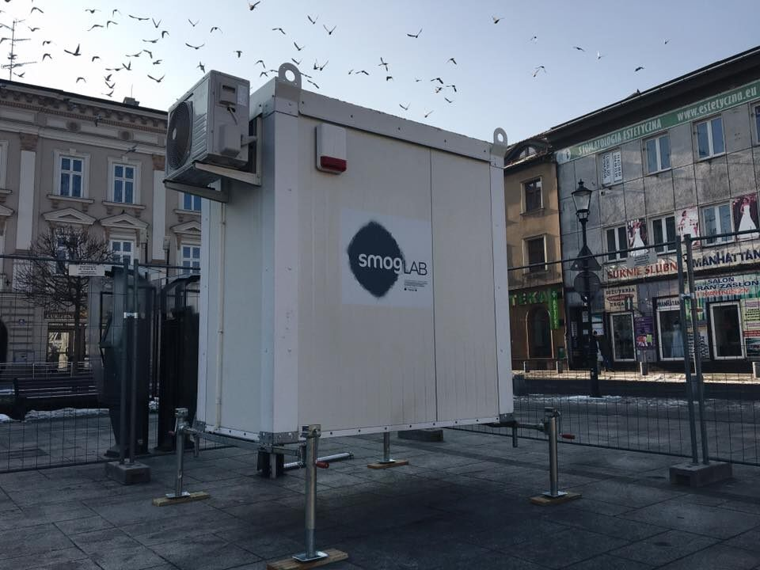

01
Jakość powietrza
Czujniki umożliwiają pomiar wybranych zanieczyszczeń i warunków atmosferycznych. Zebrane dane można prezentować na wykresach i mapach.
Przykładowe dane
Stężenie pyłów PM2.5 i PM10, temperatura oraz wilgotność powietrza.